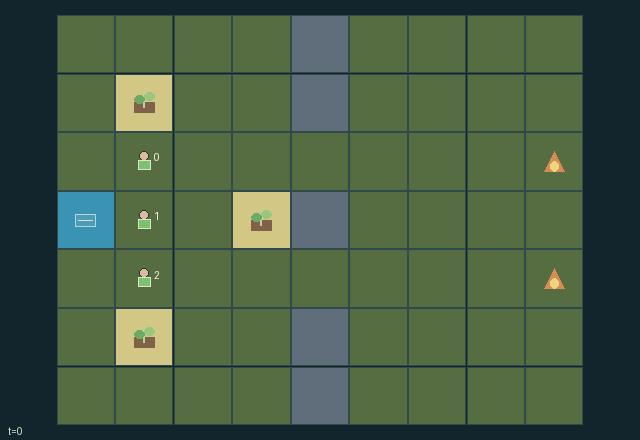

GI091 · Ember Weir: Shared Firebreaks

Contain two spreading fire fronts while preserving at least one of three shared assets, using finite water, temporary firebreaks and teammate transfers.
Identity and original contract
3 independently actionable roles; 10 discrete commands per role; 293 native observation columns per role; original horizon 96 steps. Declared per-step reward range: -2 to 1. Observation regime: fully_observable.
Source SHA-256: ecdc0a48686f6ef2675b5c36074a44339a2882bfef85950b50df836fd7e09d40
The objective, rewards, population, map and horizon remain original. A preview is not a success claim.
Objective and gameplay
Contain two spreading fire fronts while preserving at least one of three shared assets, using finite water, temporary firebreaks and teammate transfers.
Building blocks partners' movement and fire transmission at the same physical cells. Using the depot consumes finite supplies available to others. Handing water to an adjacent teammate enables later suppression or construction. Firebreak erosion and depleted fuel determine future spread.
- Fire occupies actual grid cells, lasts three steps and spreads into unused adjacent fuel every third step. Fuel never regrows.
- Spend one water to spray your own and front cells, or two to build a two-strength firebreak. Firebreaks block workers and fire until removed or eroded.
- A single finite depot serves all three workers. Adjacent workers may transfer one water; tanks hold three.
- Facing follows directional attempts. Workers in fire lose water and have actions suppressed while stunned. Stone cells block workers and do not burn.
- Protect at least one asset until no flame remains. Losing every asset ends in failure; the horizon is 96 steps.
Ending: Success when all fire lifetimes are zero and at least one asset survives; failure when all three assets have zero integrity. The shared per-step reward is success minus failure minus total new asset damage divided by 16. Otherwise truncate at step 96.
What this game explores
Resource commons & externalities: An action changes a persistent resource or burden that another role also encounters. Compare extraction with maintenance and record the downstream resource trajectory.
Joint transport & shared access: Positions, load geometry, occupancy and persistent access constrain whose action can succeed next. Distinguish physical handoff, shared controls and simultaneous force from a cosmetic cooperation label.
Survival, protection & rescue: Protection and repair alter another role's future feasible actions. Record losses, exposure, rescue and infrastructure as well as delivery; survival is determined by the actual kernel.
These are questions supported by rule structure, not observed learning effects.
Play it: operating walkthrough
crucibles play --game gi091Keep Python running and open its printed address. Select this game, set a seed and press Create session. The game itself is always English.
Assign a role range to Host with Assign / take over, or Assign all roles. Invite a second participant with Create player invitation, then assign a disjoint subset. Every original role is available.
For every owned role choose a legal command and press Queue. Arrow keys / WASD queue a declared directional action for the current role camera when available. Space or Advance one joint step advances everyone together. Non-directional games use the selectors.
Unqueued roles use the labelled untrained uniform-legal policy. Take over or release roles before the next step without resetting. Full-state debug is privileged and permanently logged; role cameras preserve permissions. Close the session to retain logs. Server restart does not restore sessions.
Complete command reference
IDs and English labels exactly match the manifest. Availability depends on role, resources, location and phase. An available action can still have no productive effect.
0·Wait
1·Move north attempt; face north
2·Move east attempt; face east
3·Move south attempt; face south
4·Move west attempt; face west
5·Spray current and front cell; spend one water
6·Build two-strength firebreak in front; spend two water
7·Draw one unit from the finite shared depot
8·Give one water to an adjacent teammate with capacity
9·Dismantle front firebreak; recover at most one water
Roles and capability identifiers
These original role names describe capabilities, not interchangeable skins. Check each owned role's legal selector before planning handoffs.
agent_0·Northern containment worker
agent_1·Central supply and relief worker
agent_2·Southern containment worker
Information and observation permissions
The entire physical world and resource state are public. All groups have all-true role visibility and the static terrain is public. Observation includes the complete fire, fuel and barrier arrays, all worker resources and all protected assets.
The GIF is full-state debug and may reveal hidden entities or private state. Train on obs[agent], not the picture, state tree or another role's private row. Field slices and visibility are in the original manifest.
Reinforcement-learning integration
import jax
from crucibles_jaxmarl import make
env = make("gi091")
key = jax.random.PRNGKey(0)
key, rk, ak, sk = jax.random.split(key, 4)
obs, state = jax.jit(env.reset)(rk)
actions = env.sample_actions(ak, state)
obs, state, rewards, dones, info = jax.jit(env.step_env)(sk, state, actions)
done = dones["__all__"]Observations are float32 vectors of width 293; actions are scalar int32; masks have 10 entries. Supply all 3 roles each transition. Masked sampling is an engineering reference, not a trained learner.
step_env retains terminal data without reset. step performs outer autoreset and keeps terminal data in info["raw_state"] and info["raw_observation"]. Use dones["__all__"] for episode boundaries; separate completion, failure and time limit in analysis.
JIT or vmap equal identities and shapes. Split independent reset, policy and transition keys. Group different shapes explicitly; do not shrink the population or horizon. Host rendering stays outside training.
Training questions and fair evaluation
Define valid completion from the objective before fitting. Preserve original rewards and also report real deliveries/services, losses, resource state, unresolved episodes and per-role returns. Animation is not a reward signal.
An action changes a persistent resource or burden that another role also encounters. Compare extraction with maintenance and record the downstream resource trajectory.
Positions, load geometry, occupancy and persistent access constrain whose action can succeed next. Distinguish physical handoff, shared controls and simultaneous force from a cosmetic cooperation label.
Protection and repair alter another role's future feasible actions. Record losses, exposure, rescue and infrastructure as well as delivery; survival is determined by the actual kernel.
Compare memory, communication or centralized critics under matched actor information. Declare critic access; keep actor inputs role-filtered. Match partner/opponent distributions, masks, compute and checkpoint selection. Final tests never enter fitting or selection.
Independent training runs or source-pairing blocks are inferential units; episodes from one policy are not independent training replications. Save hashes, keys, versions, device, time and cost. Negative, zero, failed and indeterminate outcomes are valid. No trained checkpoint or target score is supplied.
Classification and evidence
Overlapping editorial labels are reading aids, not proof of novelty, difficulty, strategic equivalence or learning effects.
- Resource commons & externalities
- Evidence
manifest.task.objective: Contain two spreading fire fronts while preserving at least one of three shared assets, using finite water, temporary firebreaks and teammate transfers.
- Evidence
manifest.actions.5: Spray current and front cell; spend one water
- Evidence
manifest.actions.6: Build two-strength firebreak in front; spend two water
- Joint transport & shared access
- Evidence
scene.rules.1: Spend one water to spray your own and front cells, or two to build a two-strength firebreak. Firebreaks block workers and fire until removed or eroded.
- Evidence
scene.rules.3: Facing follows directional attempts. Workers in fire lose water and have actions suppressed while stunned. Stone cells block workers and do not burn.
- Survival, protection & rescue
- Evidence
manifest.task.objective: Contain two spreading fire fronts while preserving at least one of three shared assets, using finite water, temporary firebreaks and teammate transfers.
- Evidence
manifest.actions.6: Build two-strength firebreak in front; spend two water
- Evidence
manifest.actions.9: Dismantle front firebreak; recover at most one water
Source, receipts and preview limits
The world-only English GIF replays saved untrained legal actions through the original kernel. At most 25 actual endpoints include initial and terminal state; no invented interpolation. It is full-state debug, not the role observation.
Original source, observation slices, manifest and mechanism
Native receipt · Presentation receipt
Engineering passes do not establish learning. Nonzero floating differences remain recorded and undetermined; no new tolerance was introduced. Human scores remain unverified.